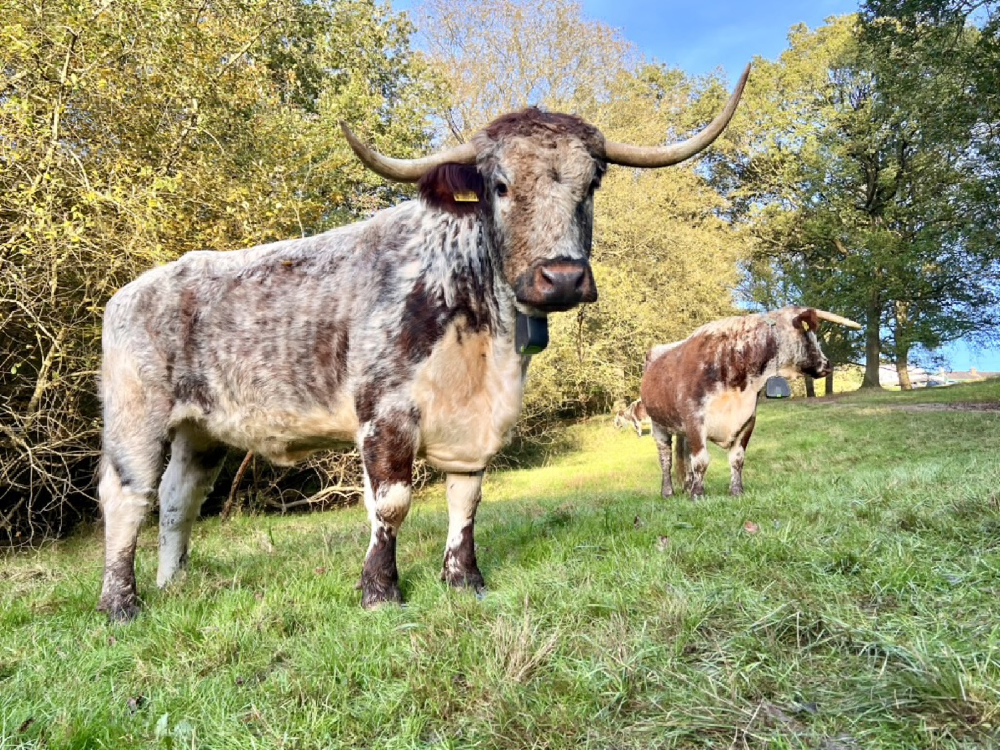
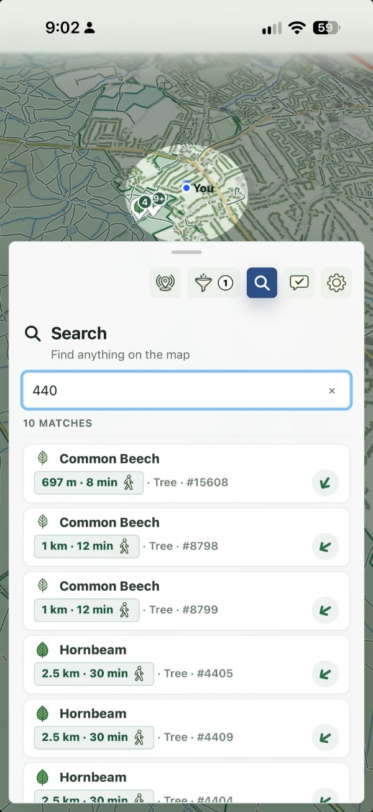
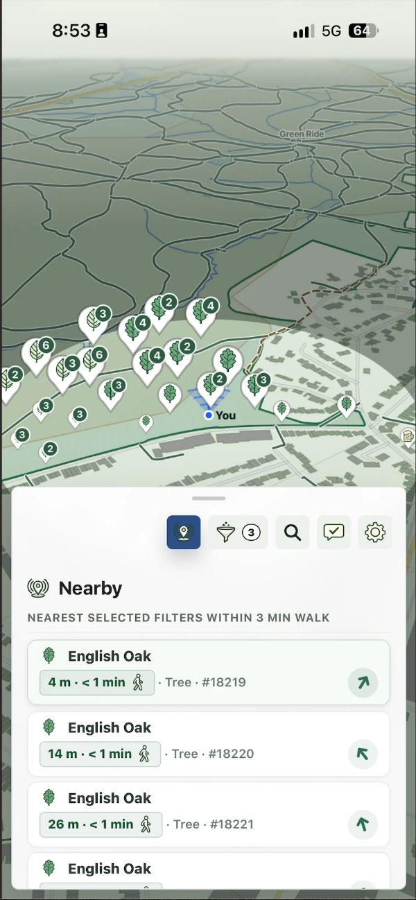
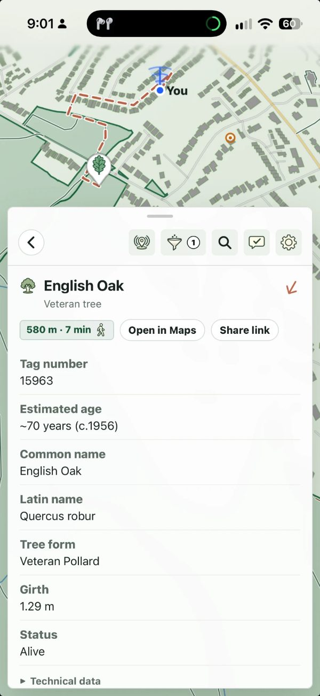

Works where your phone doesn't
Download the map once, over wi-fi or signal, and it lives on your device. Walk into the middle of the forest and every tree, path and landmark is still there.
A free field map for walkers
An offline map of all 24,906 veteran trees in the forest. Type the number on a tree’s tag to see its record, its estimated age and a way there. Paths, pubs, car parks and the grazing cattle are on it too.
In closed alpha. Leave your email to hear when invitations open.

Veteran trees are the forest’s oldest and most valued trees, many of them pollards hundreds of years old. The Veteran Tree Register records them, and the small numbered tags you’ll see on many trunks link a tree to its record.
Look up a tree you’ve spotted, or pick one to find on your next walk.



Download the map once, over wi-fi or signal, and it lives on your device. Walk into the middle of the forest and every tree, path and landmark is still there.
Epping Forest's grazing cattle wear GPS collars, and the map shows where they were last reported. Cows wander, so while you have signal the app checks for new positions every so often. Offline, you’ll see the last saved positions.
Paths and bridleways, pubs and cafés, car parks, benches, toilets and gates, bus stops and stations. All within walking distance of the forest, and all of it offline.
Everything the app can show you, counted and grouped exactly the way the app's own filters group it.
One download on signal, then the whole forest travels with you.
Stay in the loop
Alpha invitations aren’t open yet. Leave your email and we’ll tell you when they are, along with major updates about the app. Once the app launches, you’ll also get the weekly Epping Forest Ledger.
Field notes · Published weekly
A weekly write-up of what has changed in the forest — new records, the cattle, the seasons, and what the data shows.
Read the Ledger →